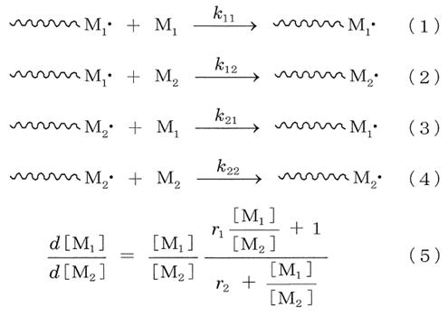
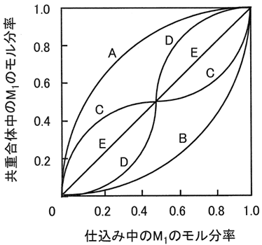

モノマー反応性比と共重合組成曲線の読み方 高分子化学
2種のビニルモノマー（M1とM2）間のラジカル共重合における下記の成長反応（1）～（4）の成長速度定数をそれぞれk11、k12、k21、k22とする。重合初期に得られる共重合体組成（d[M1] / d [M2]）は、仕込みモノマー組成（[M1] / [M2]）とモノマー反応性比（r1 = k11 / k12、r2 = k22 / k21）を用いて式（5）で表される。ただし、[M1]、[M2] はモノマー濃度である。

下図の共重合組成曲線のうち、曲線Cは、仕込みモノマー組成（[M1] / [M2]）が非常に小さい（グラフの左端寄り）ときは共重合体組成（d[M1] / d [M2]）が仕込みモノマー組成より大きく、逆に仕込みモノマー組成（[M1] / [M2]）が非常に大きい（グラフ右端寄り）ときは共重合体組成が仕込みモノマー組成より小さいことを示しており、式（5）を近似すればr1 ＜ 1、r2 ＜ 1 であることがわかる。

曲線Aの場合のモノマー反応性比として適切なものはどれか。
共重合組成曲線は横軸と縦軸を区別して読む
この問題の正答は①の \(r_1>1,\ r_2<1\) です。曲線Aでは、0と1の端点を除き、共重合体中のM1モル分率が、仕込み中のM1モル分率より大きくなっています。
| 表示 | 意味 |
|---|---|
| 横軸 \(f_1\) | 仕込みモノマー中のM1モル分率 |
| 縦軸 \(F_1\) | 重合初期に得られる共重合体中のM1モル分率 |
| 対角線 \(F_1=f_1\) | 仕込みと共重合体のM1割合が同じ |
| 曲線A：対角線より上 | 共重合体には、仕込みより高い割合でM1が取り込まれる |
M2のモル分率はそれぞれ \(1-f_1\)、\(1-F_1\) なので、M2の割合は逆に、共重合体中の方が仕込み中より小さくなります。
モノマー反応性比は「末端ごとの速度定数の比」
\[r_1=\frac{k_{11}}{k_{12}},\qquad r_2=\frac{k_{22}}{k_{21}}\]
- \(r_1>1\)：M1末端へのM1付加の速度定数 \(k_{11}\) が、M2付加の \(k_{12}\) より大きい。
- \(r_2<1\)：M2末端へのM2付加の速度定数 \(k_{22}\) が、M1付加の \(k_{21}\) より小さい。
したがって、M1とM2の濃度が等しい条件で比べると、どちらの末端でもM1への付加が起こりやすい組合せです。この性質は、M1が仕込みより高い割合で取り込まれる曲線Aと整合します。実際の付加速度にはモノマー濃度も関係するため、反応性比を単に「M1全体の重合速度」と読み替えないことが大切です。
なお、「対角線より上」という位置関係だけで反応性比を一意に決められるわけではありません。この図の曲線Aの正答は、日本技術士会の公式正答でも①とされています。
参考資料
日本技術士会：平成23年度試験問題の正答（化学部門・問15）／MIT「Synthesis of Polymers」Lecture 16：共重合組成と反応性比